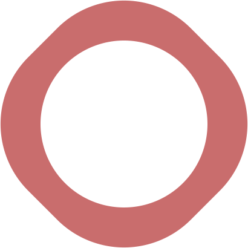

kariNurse unterstützt Auszubildende mit Migrationshintergrund in Pflegeberufen bei der Bewältigung von Sprachbarrieren.
kariNurse ist eine Art Schweizermesser für Menschen, die in der Ausbildung zur Pflegefachperson mit Sprachbarrieren zu kämpfen haben.
kariNurse ist eines von drei Karioli-Projekten. Neben kariPharm (Medikamenten- und Pflegekoordination) und kariCare (Echtzeit-Koordination in Krisenszenarien) steht kariNurse als Werkzeug, das Auszubildende mit Migrationshintergrund in Pflegeberufen unterstützt. Alle drei Apps teilen dieselbe Grundhaltung: Sie entstehen aus der Perspektive des Nutzers. Das führt mitunter zu ungewöhnlichen Lösungsansätzen.
Eine Ausbildung in der Pflege ist für jeden Auszubildenden anspruchsvoll. Wer zusätzlich in einer fremden Sprache lernen muss, trägt eine doppelte Last. kariNurse setzt an genau diesem Punkt an und behandelt das Verstehen von Zusammenhängen und das Lernen von Vokabeln als zwei getrennte Vorgänge.
Diese Mappe stellt die App vor, ordnet sie rechtlich und finanzierungsseitig ein und benennt die gesellschaftliche Relevanz auf Basis verifizierter Daten.
kariNurse ist Pflegequartett für clevere Azubis.
Anders als bei kariPharm beruht das Profil bei kariNurse nicht auf einer realen, anonymisierten Person, sondern auf einer bewusst fiktiven, illustrativen Figur, die als Ausgangspunkt für die Entwicklung diente.
Aleyna ist 22 Jahre alt, kommt aus Syrien und befindet sich im zweiten Jahr ihrer Pflegeausbildung. Ihr Alltagsdeutsch ist gut entwickelt, doch die Fachsprache der Pflege stellt sie vor eine dreifache Hürde: Alltagsdeutsch, medizinisches Latein und englische Fachliteratur überlagern sich, und jede Ebene ist ein eigenes System.
Sie ist eine selbstbewusste junge Frau. Sie nutzt kariNurse und passt die App als unterstützendes Werkzeug ihren Bedürfnissen an.
Wie kariNurse für Aleyna und Auszubildende wie sie konkret aufgebaut ist, beschreibt das folgende Kapitel.
Verstehen und Vokabellernen als getrennte Vorgänge.
Links zeigt kariNurse den vollständigen Rahmenausbildungsplan der Fachkommission nach § 53 PflBG als Orientierung. In der Mitte werden bewusst nur die Inhalte des aktuellen Ausbildungsblocks angezeigt, nicht der gesamte Stoff der dreijährigen Ausbildung. Diese Reduktion ist kein technisches Detail, sondern eine gezielte psychologische Entlastung: Der gewaltige Ausbildungsumfang soll leicht, transparent und nicht überwältigend wirken. kariNurse soll Freude an der Arbeit mit dem Hilfsmittel erzeugen, keine zusätzliche Last.
Das zentrale didaktische Prinzip von kariNurse trennt zwei Vorgänge, die in klassischen Sprachlern-Apps meist vermischt werden: das Verstehen einer Anleitung und das Erlernen einer Vokabel. kariNurse ermöglicht es, eine fachliche Anleitung zunächst in der Muttersprache vollständig zu erfassen und erst danach, etwa auf dem Weg nach Hause, die passende deutsche Vokabel zu lernen. Ein Begriff wie „Thrombozytopenie" wird dabei in seine Wurzelbedeutung zerlegt (Thrombo-Zyt-Penie), statt als reine Lautfolge auswendig gelernt zu werden.
Jeder Begriff in kariNurse ist über drei gleichwertige Kanäle zugänglich: Bild, gesprochene Aussprache und Text in beiden Sprachen. Welcher Kanal im Moment zählt, entscheidet Aleyna selbst, je nachdem, wo sie sich gerade befindet und was in der Situation möglich ist.
Eine typische Szene: Aleyna sitzt in der U-Bahn und scrollt durch ihre rot markierten Begriffe. Sie klickt „Verbandschere" an, sieht das Bild der typischen gebogenen Schere, hört über Kopfhörer fünfmal das deutsche Wort, spricht es nach und liest auf Arabisch, wie diese Schere verwendet wird. Alle drei Kanäle in einer einzigen Alltagssituation, ohne Schreibtisch und ohne Unterrichtsraum.
Das Mikrofon funktioniert in kariNurse in zwei Richtungen. Als Suche: Aleyna spricht einen Begriff, den sie gerade gehört hat, etwa „Verbandschere", und die App zeigt ihr sofort das passende Bild sowie ein PDF oder Fenster mit der Verwendungsbeschreibung, zweisprachig in Deutsch und Muttersprache. Als Eingabe: Aleyna kann eigene Inhalte per Mikrofon aufnehmen und in ihrem persönlichen Vorrat ablegen, wahlweise auf Deutsch oder in ihrer Muttersprache. Spracheingabe ersetzt hier die Tastatur, was besonders unterwegs und bei noch unsicherer Schreibfertigkeit in der Zweitsprache den Unterschied macht.
Jede Vokabel erhält einen Lernstands-Marker, den Aleyna selbst vergibt, jederzeit reversibel:
Der Lernfortschritt wird in farbigen Balkendiagrammen dokumentiert. Es gibt keinen Vergleich mit anderen Lernenden. Der einzige Wettbewerb ist der gegen den eigenen Fortschritt.
Was Karioli baut — und was die Träger daraus machen.
Die Architektur aus Kapitel 3 ist überall gleich. Wie sie in einer konkreten Ausbildung und in einem konkreten Träger-Umfeld genutzt wird, entscheiden Institute und Träger — nicht Karioli.
Pflegeausbildung ist national wie regional unterschiedlich organisiert: In Deutschland gilt der Rahmenlehrplan der Fachkommission nach § 53 PflBG über drei Ausbildungsjahre, dessen konkrete Umsetzung die Bundesländer selbst bestimmen. Im europäischen Ausland ist eine vierjährige Ausbildung die Regel. kariNurse bildet diese Vielfalt nicht als ein starres Schema ab, sondern als anpassbare Struktur: Jedes Institut ordnet seine eigenen Inhalte entsprechend der eigenen Ausbildungsordnung ein. Gegenstände in den jeweiligen Lehrräumen werden gescannt und den passenden Lerninhalten zugeordnet.
Das Forum wird nicht von Karioli betrieben, sondern vom jeweiligen Träger zur Verfügung gestellt — im vorliegenden Fall dem DRK Niedersachsen. Karioli liefert lediglich die technische Schnittstelle; Betrieb und Zugriffsrechte liegen vollständig beim Träger. Vom Träger eingestellte Inhalte sind für Auszubildende sichtbar als zertifiziert gekennzeichnet. Ob und in welchem Umfang Auszubildende wie Aleyna zusätzlich eigene Lerneinheiten, Foto-Glossare oder Übersetzungen im Austauschbereich mit anderen teilen dürfen, entscheidet ebenfalls der Träger — er trägt damit auch die Verantwortung für einen möglichen Missbrauch dieser Funktion.
Die Zahlen hinter der Sprachbarriere: Deutschland und EU.
Diese Mappe beschränkt sich bewusst auf Deutschland und die Europäische Union. Eine internationale oder globale Einordnung würde eine eigene, vom Karioli-Fonds beauftragte Studie erfordern und ist nicht Gegenstand dieses Dokuments.
2024 arbeiteten mehr als 300.000 ausländische Pflegekräfte in Deutschland, 17,8 Prozent der rund 1,7 Millionen sozialversicherungspflichtig Beschäftigten in der Pflege, also fast jede fünfte Pflegekraft. 2013 waren es rund 75.000 (5,5 Prozent), eine Vervierfachung innerhalb von elf Jahren.
Nach der Pflegekräftevorausberechnung des Statistischen Bundesamts (2024) könnten je nach Szenario zwischen 280.000 und 690.000 Pflegekräfte bis zum Jahr 2049 fehlen.
Die Abbruchquote in der Pflegeausbildung wird uneinheitlich berichtet: Werte reichen von rund 15 Prozent (offizielle Auswertung der nach 2020 begonnenen generalistischen Ausbildung, Land Brandenburg) bis zu 46 Prozent (regionale Sonderauswertung, NRW). Sprachbarrieren sind ein dokumentierter Abbruchgrund: In einem Landkreis mit hohem Migrationsanteil unter den Auszubildenden (bis 70 Prozent) wurden Sprachschwierigkeiten als Hauptgrund für Abbrüche benannt.
Die Rekrutierungskosten für eine internationale Pflegekraft liegen nach mehreren unabhängigen Quellen bei 8.000 bis 20.000 Euro pro Person (Sprachkurse, Vermittlung, Visum, Anerkennungsverfahren, Wohnungssuche). Bei gescheiterter Integration ist das ein verlorenes Investment.
Ein Bericht der Europäischen Kommission und der OECD dokumentiert einen Anstieg des Anteils außerhalb der EU ausgebildeter Pflegekräfte in der EU um 72 Prozent zwischen 2019 und 2022. Der Bericht weist für 15 EU-Länder einen Mangel an Pflegepersonal aus. Ein weiterer OECD-Bericht beziffert für Deutschland rund 240.000 ausländische Pflegekräfte im Jahr 2021, eine Verdreifachung binnen zwei Jahrzehnten.
Relevante EU-Förderinstrumente für ein mögliches kariNurse-Pilotprojekt:
Quellen: Statistisches Bundesamt (Pflegekräftevorausberechnung 2024); Bundesagentur für Arbeit / Mediendienst Integration (2025); Konzertierte Aktion Pflege der Bundesregierung; Europäische Kommission / OECD-Bericht zu Gesundheitsfachkräften in der EU; DAAD / Erasmus+ Nationale Agentur; Bundesministerium für Arbeit und Soziales (ESF Plus). Alle Angaben mit Bandbreite dargestellt, wo die Datenlage uneinheitlich ist.
Anhaltswerte zur Orientierung, keine Kalkulation.
Die folgenden Angaben sind grobe Anhaltswerte auf Basis öffentlich verfügbarer Marktdaten und Vergleichswerte. Sie dienen ausschließlich der Orientierung und ersetzen keine verbindliche Angebotskalkulation. Die endgültige Bewertung der Produktionskosten obliegt dem Karioli-Fonds und den von ihm beauftragten Fachleuten.
kariNurse verfügt gegenüber kariPharm über keine sicherheitskritischen Echtzeit-Schnittstellen (kein Notfallsystem, keine Medikamentendatenbank), was die Komplexität tendenziell reduziert. Gleichzeitig entstehen eigene Kostenpositionen durch mehrsprachige Spracherkennung mit medizinischem Fachvokabular und den Aufbau der initialen Lerninhalte.